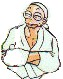
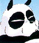
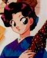
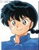
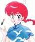

I Personaggi - La Famiglia Saotome
|
I Personaggi - La Famiglia Saotome |
Saotome è un nome molto comune ed è anche una vecchia parola usata per dire "ragazza". I nomi dei Saotome, tranne quello di Nodoka, hanno a che fare con i cavalli.
| Saotome Genma |  |  |
È l'insensibile padre di Ranma. Molto tempo fa, si mise daccordo col suo amico Soun Tendo, affinché i loro due figli si sposassero. Mentre stava allenandosi con Ranma nello sperduto Campo di Jusenkyo in Cina, è stato spinto dal figlio dentro la Sorgente Shonmaoniichuan, da dove è uscito trasformato in Panda. Al contrario di Ranma, Genma non ha molti problemi a convivere con la sua doppia natura e, anzi, a volte gli piace vivere da panda, soprattutto se ciò gli torna utile. Anche quando è un panda, continua a fare alcune cose come se fosse un uomo, come, ad esempio giocare a shogi con Soun. Dal momento che il panda non può parlare, si esprime tramite dei cartelli di legno che appaiono praticamente dal nulla!
Segni Particolari: Occhiali rotondi legati intorno alle orecchie
Armi: Quando è panda, usa i cartelli, altrimenti qualche tecnica di arti marziali
Significato del Nome: Genma significa "Cavallo Scuro"
| Saotome Nodoka |  |
L'influenza di una madre con le sue preoccupazioni, è dannosa per gli allenamenti di un ragazzo nelle arti marziali, così Genma prende suo figlio e lascia Nodoka. Quando parte, Genma giura di riuscire a fare di Ranma un uomo completo, altrimenti avrebbe fatto un onorevole "seppuku" (quello che noi chiamiamo hara-kiri). Come moglie di un maestro di arti marziali, Nodoka accetta la decisione di Genma.
Nodoka riceve regolarmente delle lettere da Genma, finché questi arriva a Jusenkyo con Ranma e le lettere smettono di arrivare. Un giorno Nodoka arriva al dojo dei Tendo con lo scopo di rivedere suo figlio cresciuto e diventato un uomo e, se così non fosse, ricordare a Genma la sua promessa! Così quando sente delle voci riguardanti suo figlio che si veste da donna e cose del genere, la sua tranquillità viene meno e impugna la sua katana. Quando finalmente arriva al dojo, Ranma e Genma sono "partiti per un altro viaggio di allenamento", lasciando la fidanzata Akane con sua "cugina Ranko" e il suo "Panda domestico" (credo sia inutile precisare chi siano la "cugina" e il "panda domestico"...).
Apparizione: Nettohen episodio 142. Voume 22 parte 2.
Armi: Una Katana utilizzata con maestria.
Significato del Nome: Nodoka significa "Mite".
| Saotome Ranma |  |  |
È il nostro "eroe" ed il Kempo è la sua vita. Non rifiuta mai una sfida e, soprattutto se ha "marziale" nel suo nome, la vince pure! (ginnastica ritmica marziale, pattinaggio artistico marziale, cerimonia del tè marziale, arti culinarie marziali e così via).
Mentre si allenava a Jusenkyo con suo padre, è caduto nella Nyanniichuan subendone la maledizione. A causa di un accordo tra genitori, è stato deciso che Ranma dovrà sposare Akane Tendo e portare avanti con lei la tradizione del dojo, ma nessuno dei due vuole rispettare questo accordo...almeno apparentemente!
Significato del Nome: Ranma è un nome non molto comune che può essere usato sia per i maschi che per le femmine e significa "Cavallo Selvatico". Solitamente nei titoli Ranma è scritto in Kanji al maschile e in Hiragana al femminile.
Segni Particolari: il codino ai capelli. Ama vestirsi alla cinese.
Alias:
Camuffamenti: (solo per Ryoga)
Parlata: ha un modo di parlare rozzo e anche dialettale sia da ragazzo che da ragazza (es. "kawaikunee" invece di "kawaikunai", "omoshiree" invece di "omoishiroi").
<<-RITORNA ALL'INDICE DEI PERSONAGGI
| Grafica, impaginazione e testi sono (c) di Francesco "Nibunnoichi" Giordano e non possono essere usati senza il consenso dell'autore. |